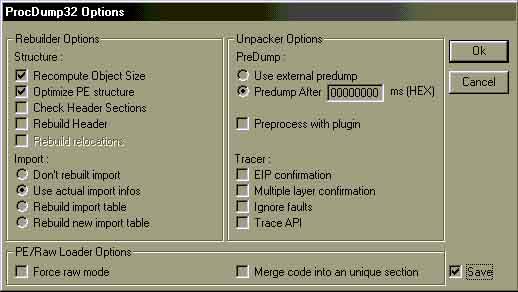
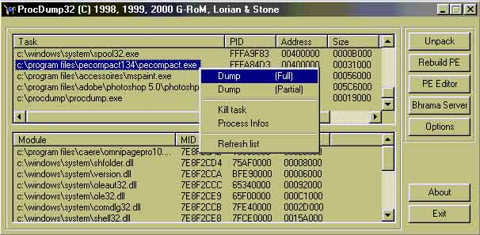

Introduction :
Avant tout, les fichier compactés dis PE n'ont rien à voir avec un compactage sous WinRAR ou autre. Se sont des fichiers independants, compréssés et parfois même chiffrés. Au debut ces programmes etaient conssus dans le but de tenir toujours le moins de place possible pour le transport de fichiers. Avec le temps leurs auteurs se sont rendus compte que de tels fichiers embêtaient bien les crackers de tout poils car on ne pouvais pas désassembler un fichier de façon lisible. Avec l'arrivée de protections comme Anti-SoftIce, Vbox et autres, les professionels sont tous devenu unanime, les fichiers PE chiffré sont une des pires choses qu'il puisse arrivé à un cracker. Au premier coup d'oeil, il parait difficile de deplomber de tels fichiers, mais certains crackers avaient reussi à craquer un fichier PE en exploitant une faille systeme ; en effet, ces fichiers compactés se decompressant en mémoire utilisent une zone propriétaire dite buffer. De cette façon on pouvait cibler un octet en mémoire pour le patcher sans probleme. C'est depuis ce moment là que la guerre à l'empaqueteur (Packer) le plus performant et le plus sécurisant à étée lancée...
Dans cette introduction, dans un premier temps, nous allons faire beaucoup de théorie, car dans ce type de protection, point de salut, il faut faire en faire beaucoup car la pratique se revele limitée compte tenu des possibilités des Packers.
Premiers reflexes à avoir :
Avant toute chose, il faut être sûr que le fichier cible est compacté. Pour cela il existe une méthode quasi-infaillible et toute simple qui conssiste à ouvrir le fichier sous un editeur héxadecimal et de regarder la signature avant le point d'entrée du fichier. Par exemple, pour l'excellent UPX, la signature est (surement la plus longue de toutes!) : UPX 0.82 Copyright (C) 1996-1999 Laszlo Molnar & Markus Oberhumer $..$Id: NRV 0.61 Copyright (C) 1996-1999 Markus F.X.J. Oberhumer $..$License: NRV for UPX is distributed under special license $..UPX! Ouf!
Cela va nous servir à bien cibler le type de compacteur (Packer), ici UPX v0.82.
Type de compacteur :
Des compacteurs, il en existe de toutes sorte, des simples et des complexes.
Vous l'aurez compris, un programme compacté par un compacteur ou par un autre devra être cracker différemment. Nous verrons les méthodes les plus courantes ;)
Les outils :
" Dans le monde du cracking il existe une catégorie qui se demarque des autres, les Légendes. Ce sont de vrais pros, ils connaissent tout sur tout, déplombent en une nuit ce qu'une equipe de crackers n'aurrai pu faire en deux jours. Ce sont surtout eux qui codent des programmes et autres utilitaires pour le cracking, histoire de se facilité la vie pour plus tard, et la notre aussi! C'est vraiment faignant un cracker :)
Tout ca pour vous dire qu'il existe des tones d'outils mais ils ne sont pas tous au point. Pour bien s' initier, je vous conseil les outils suivant :
Votre cerveau :
ce coup-ci il va vraiment vous servir.
WinDasm 8.9 :
Le désassembleur le plus pratique, inutile
de le presenté ;)
Hiew 6.x :
In-dis-pens-sable !! Pour faire des
modifications directement en assembleur dans le fichier
compacté. Et oui, c'est le seul moyen pour casser des
protections... Bref, ca évite de passer par lé héxadecimale
pour implementer son code.
Son interface rebutante au début se revele
géniale pour peu que l'on s'y interresse. De toute façon vous
serez obliger de vous en servir :)C'est sans aucun doute le prog
le plus abouti pour faire ces modifs. Toute l'aide est accessible
en appuyant sur F1.
Soft-Ice 3 ou 4 :
Si vous ne l'avez toujours pas, procurez-le
vous! Sinon vous ne pourrez pas tracer le programme compacter en
mémoire. On ne presente plus le debugger par
exellence. Son usage pourra aussi paraitre compliqué et orienté
"super-pro" mais avec un peut de pratique tout se
passera bien. Un fois charger en mémoire (une fois installer et
machine rebootée) vous pouvez rendre la console visile grace à
Ctrl+D et acceder à l'aide en tappant help puis
entrée. Attention, une documentation en français serait tout de
même preferable...
NB: Soft-Ice ne demarre pas ou mal sur
certaines machines, dans ce cas verifiez que tout est bien
installer. Si c'est le cas et qu'il ne demarre toujours pas... et
bien vous êtes mal pour deplomber des progs compactés...
PE-Sniffer 1.x :
Petit programe qui ne pais pas de mine mais
bien sympat et qui va nous indiquer quel compacteur à été
utiliser pour compacté le fichier cible. Ca nous évite donc de
chercher la signature dans le fichier.
Son utilisation est extremement simple, il
suffit d'indiquer le fichier cible et PE-Sniffer nous dis par
quel outils il à été compacté en grisant le nom du compacteur
reconnu. Utile pour ProcDump.
ProcDump :
Comment ne pas siter ce programme. en fait
il existe mieux pour detailler les blocs mémoire occupé, etc,
mais ProcDump possede un systeme de script qui le rend évolutif assez
simplement. Outil indispenssable aussi.
Là c'est un peux plus delicat. ProcDump
comporte des tas d'options pour analyser et/ou faire des
traitement dans le buffer du fichier decompacté. Ici un petit
mode d'emploi s'impose, il s'étofferras dans les prochains n°
de MemenTo.
Quand vous démarrez ProcDump, allez dans les options.
Voici celles qui peseront le moins de problemes :

Une fois la case de sauvegarde d'options cochées, retournez dans ProcDump. Pour vous montrer son fonctionnement on va purger des strings datas.
On va donc demarrer un programme compacté ( ici on va prend PE Compact sur www.collakesoftware.com comme exemple). Donc demarrez le, puis revenez a ProcDump. Dans la liste où sont affichées les applications qui sont en mémoire, cliquez sur un nom de programme avec le bouton de droite puis sur Refresh avec celui de gauche. Vous verrez que tout en bas apparait le nom de fichier pecompact.exe. Cliquez dessus avec le bouton de gauche puis de droite, cliquez ensuite sur Dump (Full) avec le bouton de gauche. Là entrez le nom que vous voulez attribuer au fichier. Pour mieux quivre on va quand même l'appeller 123.exe puis on fait OK. c'est un fichier exe? Ok, alors on peut le lancer ! faites donc !

Paf! ca plante, c'est tout à fait normal. Vous verrez mieux en regardent ca taille, ca ne pese que quelques kilo-octets. Ce ne sont en fait que les strings-data avec une entrée/sortie d'executable pour être desassembler, avec WinDasm par exemple. On le desassemble, c'est très rapide. Maintenant on peut voir tous les strings data avec leurs adresses mémoire ce qui est très important pour localiser le(s) octets(s) à patcher en mémoire.
Pour patcher des octets en mémoire c'est compliquer et il existe plusieurs méthodes :
Le loader : Comme sont nom l'indique, il va démarrer le programme cible en placant les octets à modifier dans le buffer mémoire de façon à patcher les octets. Cette méthode est très efficace mais sensible au variation et peut rendre la machine instable si elle est mal utilisée. On la réservera surtout pour debuter et pour faire des essais.
Le patchage : Plus compliqué que l'utilisation d'un loader mais infiniment plus efficace. En implementant directement le loader dans le fichiers cible en patchant notre propre code via Hiew. Cette méthode est sans doute la plus classe mais elle requiert une certaine rigeur sinon, ca plante :)
Tout ca c'est bien beau, mais voilà... Dans certains cas les octects à modifier ne se trouvent pas à proximité des strings datas. Il faut donc purger tout le code qui est en mémoire et pour cela il faut retourner dans les options de ProcDump, aller dans les options, cocher Merge code into a unique section, faire Ok puis la même operation que pour voir les strings :) Maintenant on peut voir tout le code source, WinDasm ne bloque plus dès les premieres lignes!! :)
Voilà, le mini mode d'emploi de ProcDump touche à sa fin. Je pense que sa devrais aller pour un debut :) Je vais maintenant vous expliquer le fonctionnement de base de chacain de ces outils.
Le loader :
r!SC's Process Patcher, s'il ne devait en avoir plus qu'un ca serait lui. Simple et efficace, il prend en compte pas mal de protections PE, est asser stable et se parametre grace à un script, redoutable :)
Pour commencer on va se faire les dents sur un tout petit probleme dans le programme PE Compact v1.x. En effet, quand on va dans About, il est affiché dans la fenêtre Registererd To: Unregistered!, pas très acceuillant... C'est pourquoi on va le virer.
Pour se faire, recupérez le fichier 123.exe que l'on à fait avec ProcDump et désasemblez-le avec WinDasm. On va dans les strings data et on cherche en bas de la liste "Unregistered!". Une fois trouvé on verifie s'il n'y en a pas plusieur en double-cliquant une seconde fois sur "Unregistered!". Ok c'est bon, il est le seul, ca va nous facilité la tâche. Je vous previens tout de suite, j'ai pris la version 1.40 beta 1 de PE Compact,les adresses peuvent ne pas correspondre mais le principe et la securité restes les mêmes :)
Ok, on est dans WinDasm et il nous donne ca :
* Possible StringData Ref from Code Obj ->"About PECompact"
|
:00404DA1 6844A24000 push 0040A244
:00404DA6 FF7508 push [ebp+08]
:00404DA9 E8352D0000 call 00407AE3
:00404DAE 6833B24000 push 0040B233
:00404DB3 680C040000 push 0000040C
:00404DB8 FF7508 push [ebp+08]
:00404DBB E8F92C0000 call 00407AB9
* Possible StringData Ref from Code Obj ->"PECompact v1.40b1, "
|
:00404DC0 6808B24000 push 0040B208
:00404DC5 6853040000 push 00000453
:00404DCA FF7508 push [ebp+08]
:00404DCD E8E72C0000 call 00407AB9
* Possible StringData Ref from Code Obj ->"Unregistered!"
|
:00404DD2 6854A24000 push 0040A254 << l'adresse d'affichage
:00404DD7 6834040000 push 00000434 << on pousse le texte dans la pile
:00404DDC FF7508 push [ebp+08]
:00404DDF E8D52C0000 call 00407AB9 << on affiche le texte
:00404DE4 33C0 xor eax, eax
:00404DE6 5E pop esi
:00404DE7 5F pop edi
:00404DE8 5B pop ebx
:00404DE9 C9 leave
:00404DEA C21000 ret 0010
Vu la tête du "listing" il est clair que l'on doit supprimer le push 00000434. Je vais maintenant vous montrer le script qu'il faut utiliser pour activer cette modification dans le loader :
O=Pe140bcrk.exe: F=PECompact.exe: p=404dd7 /68,34,04,00,00 /68,34,00,00,00: $
Voilà, vous avez compris? En fait O= le_nom_du_loader, F= le_nom_du_fichier_cible, p=l'adresse /la_ligne_d'origine /la_même_ligne_mais modifiées.
On pourrai aussi optimiser le script en faisant :
O=Pe140bcrk.exe: F=PECompact.exe: p=404dd9 /04 /00: $
Voila, dans le script, ne laisser pas plus d'un espace entre les differentes parties, sinon erreur.. Vous pouvez maintenant enregistrer ce fichier au format *.rpp dans le repertoire où se trouve rpp.exe, on va l'appeller Pe140bcrk.rpp. Maintenant executez le fichier rpp.exe et choisissez le fichier Pe140bcrk.rpp. Si tout à bien été fait un message de réussite apparaitra, et si un d'erreur se produit et bien c'est que vous avez fait une faute de frappe ;)
On peut maintenant placer le fichier Pe140bcrk.exe dans le repertoire où se trouve PE Compact 1.40b1 et le demarrer. On va dans About et là, c'est magique! le "Unregistered!" n'est plus là! ;)
Et oui, en remplacent le 68,34,04,00,00 par 68,34,00,00,00. On a remi le push à 0, c'est comme si rien ne s'y trouvais, le texte s'en trouve effacé.
C'est tout! Pour le reste je vous laisse chercher et la solution pour déplomber completement PE Compact 1.40b1 en attendant le prochain n° de MemenTo ;) En tout cas le principe reste le même pour pas mal de programmes.
Conclusion :
Comme vous avez pu le voir que les fichiers compactés sont un sujet très interressant et il on va le traiter sur plusieurs numéros...Donc rendez vous pour la suite dans le M4
En tout cas soyez fort, vous verrez que comme tout, c'est pas sorcier ;)
Conseils de derniere minutie :
Vala c'est tout! :)